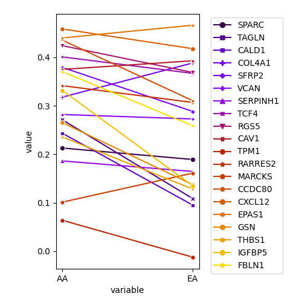
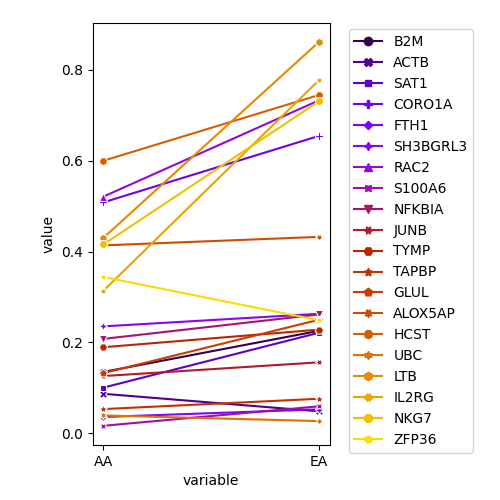

dec23.plot.select.expr.2
import sys
import os
import re
import numpy as np
import scipy
import scipy.stats
import matplotlib
import matplotlib.pyplot as plt
import seaborn as sns
import pandas as pd
from sklearn.decomposition import PCA
from sklearn.utils.extmath import randomized_svd
from sklearn.manifold import TSNE
from scipy.stats import pearsonr
sys.setrecursionlimit(10000)
from sklearn import svm
from sklearn.calibration import CalibratedClassifierCV
from scipy.stats import ttest_ind, ttest_rel
from operator import itemgetter
import pick_genes_by_total
def read_column(n):
f = open(n)
f.readline()
gx = {}
for l in f:
l = l.rstrip("\n")
ll = l.split("\t")
for ix,v in enumerate(ll):
if v=="": continue
gx.setdefault(ix, [])
gx[ix].append(v)
f.close()
return gx
def read_gsm(n):
f = open(n)
by_query = {}
q = None
queries = []
for l in f:
l = l.rstrip("\n")
if l.startswith("Query"):
q = l.split(" ", 1)[1]
queries.append(q)
by_query.setdefault(q, [])
continue
ll = l.split()
g = ll[0]
pval1 = float(ll[1])
pval2 = float(ll[2])
avgexpr_h = float(ll[3])
avgexpr_l = float(ll[4])
a_mean = float(ll[5])
a_std = float(ll[6])
#if pval1<1e-5 and pval2<1e-5:
if pval1<0.05 and pval2<0.05:
#if pval1<0.01 and pval2<0.01:
#if pval1<0.1 and pval2<0.1:
#by_query[q].append((g, pval1, pval2, avgexpr_h))
#by_query[q].append((g, pval1, pval2, avgexpr_h/avgexpr_l))
#by_query[q].append((g, pval1, pval2, np.log(avgexpr_h/avgexpr_l))) #AA
by_query[q].append((g, pval1, pval2, np.log(avgexpr_h/a_mean))) #mean, test #EA
#by_query[q].append((g, pval1, pval2, (avgexpr_h - a_mean)/a_std))
#by_query[q].append((g, pval1, pval2, avgexpr_h - a_mean)) #AA
#by_query[q].append((g, pval1, pval2, avgexpr_h / a_std))
f.close()
return by_query, queries
def read_list(n):
m = []
f = open(n)
for l in f:
l = l.rstrip("\n")
m.append(l)
f.close()
return m
def is_not_filtered(g):
if g.startswith("RPL") or g.startswith("RPS") or g.startswith("HLA-"):
return False
else:
return True
def is_not_gene(g, choice, qid):
if choice=="EA":
if qid=="3":
if g=="PTPRC" or g=="CORO1A" or g=="CD52":
return False
return True
if qid=="5" and g=="PTPRC":
return False
#if qid=="4" and (g=="PTPRC" or g=="CORO1A" or g=="CD52" or g=="TAPBP"):
if qid=="4" and (g=="TAPBP"):
return False
if qid=="1" and (g=="CD52" or g=="GNG11"):
return False
return True
elif choice=="AA":
if qid=="1" and g=="GNG11":
return False
return True
if __name__=="__main__":
choice = sys.argv[2] #EA or AA
_, _, _, gene_sum = pick_genes_by_total.read("cell.type.expr.M%s.%s.more.joined.txt" % (sys.argv[1], choice), choice)
#g,g_CAF,g_T,g_Myeloid,g_Neutrophil, g_T+g_Neutrophil
if choice=="EA":
#gene_sum.sort(key=itemgetter(1), reverse=True)
#genes_AA = set([g[0] for g in gene_sum[:30]])
gene_sum.sort(key=itemgetter(5), reverse=True)
#gene_sum = [g for g in gene_sum if g[0] not in genes_AA]
else:
gene_sum.sort(key=itemgetter(5), reverse=True)
genes_EA = set([g[0] for g in gene_sum[:30]])
gene_sum.sort(key=itemgetter(1), reverse=True)
gene_sum = [g for g in gene_sum if g[0] not in genes_EA]
#qid = int(sys.argv[1])
qid = sys.argv[1]
'''
if choice=="EA":
gene_sum.sort(key=itemgetter(5), reverse=True)
else:
gene_sum.sort(key=itemgetter(1), reverse=True)
'''
#g_of_interest = [g[0] for g in gene_sum[:100]]
g_of_interest = [g[0] for g in gene_sum if is_not_filtered(g[0]) and is_not_gene(g[0], choice, qid)]
print(g_of_interest)
g_of_interest = g_of_interest[:20]
#columns = read_column("EAcoef.filtered.list")
EA = read_list("EA.list")
#AA = read_list("AA.list.2")
AA = read_list("AA.list")
EA_list = {}
AA_list = {}
queries = []
for sample in EA:
EA_list[sample], queries = read_gsm(sample)
for sample in AA:
AA_list[sample], queries = read_gsm(sample)
#print(queries)
#sys.exit(0)
#genes_x = read_list(sys.argv[1])
#genes_x = read_list("selected.by.expr.q%s.EA.more.txt" % sys.argv[1])
#genes_x = read_list("selected.by.expr.q%s.EA.more.with.neutro.txt" % sys.argv[1])
#genes_x = columns[qid-1]
genes_x = g_of_interest
EA_higher = 0
AA_higher = 0
equal = 0
by_gene = {}
ax_EA = []
ax_AA = []
t_table = {}
t_id = 0
for ix,q in enumerate(queries):
#print("Query:", q)
by_gene_EA = {}
for sample in EA:
for g, i, j, a in EA_list[sample][q]:
by_gene_EA.setdefault(g, {})
#by_gene_EA[g].setdefault(sample, 0)
by_gene_EA[g][sample] = a
by_gene_AA = {}
for sample in AA:
for g, i, j, a in AA_list[sample][q]:
by_gene_AA.setdefault(g, {})
#by_gene_AA[g].setdefault(sample, 0)
by_gene_AA[g][sample] = a
if ix == int(qid)-1:
for ggid, g in enumerate(genes_x):
sam_EA = []
sam_AA = []
for s in EA:
if g not in by_gene_EA or s not in by_gene_EA[g]:
sam_EA.append(0)
#sam_EA.append(1.0)
else:
sam_EA.append(by_gene_EA[g][s])
for s in AA:
if g not in by_gene_AA or s not in by_gene_AA[g]:
sam_AA.append(0)
#sam_AA.append(1.0)
else:
sam_AA.append(by_gene_AA[g][s])
'''
for sE, sA in zip(sam_EA, sam_AA):
t_table[t_id] = [g, sA, sE]
t_id+=1
'''
#sam_EA = [by_gene_EA[g][s] for s in EA]
#sam_AA = [by_gene_AA[g][s] for s in AA]
#sam_AA[:4]
avg_AA = np.mean(sam_AA)
avg_EA = np.mean(sam_EA)
sys.stdout.write(g + "\t" + str(avg_AA) + "\t" + str(avg_EA) + "\t" + str(avg_AA-avg_EA) + "\n")
#sys.stdout.write(g + "\t" + "\t".join(["%.2f" % x for x in sam_AA]) + "\t" + "\t".join(["%.2f" % x for x in sam_EA]) + "\n")
if avg_EA > avg_AA:
EA_higher+=1
elif avg_AA > avg_EA:
AA_higher+=1
else:
equal+=1
#t_table[ggid] = [g, np.exp(avg_AA), np.exp(avg_EA)]
ax_AA.append(avg_AA)
ax_EA.append(avg_EA)
t_table[ggid] = [g, avg_AA, avg_EA]
print(AA_higher, EA_higher, equal)
print(ttest_rel(ax_AA, ax_EA, alternative="less"))
df = pd.DataFrame.from_dict(t_table, orient="index", columns=["gene", "AA", "EA"])
dx = pd.melt(df, id_vars=["gene"], value_vars=["AA", "EA"])
plt.figure(figsize=(5,5))
plt.subplots_adjust(left=0.185, right=0.66, bottom=0.11, top=0.955, hspace=0.2, wspace=0.2)
sns.lineplot(data=dx, x="variable", y="value", hue="gene", ci=None, dashes=False, palette="gnuplot", markers=True, style="gene") #ci = None
plt.legend(bbox_to_anchor=(1.05,1), loc=2)
#plt.show()
plt.savefig("lineplot_%s_%s.png" % (choice, qid))
#sys.exit(0)
'''
genes = set(list(by_gene_EA.keys()) + list(by_gene_AA.keys()))
gs = []
for g in genes:
#print(q, g, by_gene_EA.get(g, 0), by_gene_AA.get(g, 0))
count_EA = by_gene_EA.get(g, 0)
count_AA = by_gene_AA.get(g, 0)
size_ratio = len(AA) / len(EA)
if count_EA==0:
ratio = count_AA / len(AA) / (1/(len(EA)*2))
score = ratio * (1.0 * size_ratio +count_AA) / 2
else:
ratio = count_AA/ len(AA) / (count_EA / len(EA))
score = ratio * (count_EA * size_ratio +count_AA) / 2
if ratio>1.2 and count_AA/len(AA) >= 0.5:
#if ratio<1.2 and ratio>1 and count_AA/len(AA) >= 0.5:
gs.append((g, ratio, score, count_EA, count_AA))
gs.sort(key=itemgetter(2), reverse=True)
for g,c1,c2,c3,c4 in gs:
if g in genes_x:
#print(g, c1, c2, c3, c4)
by_gene.setdefault(g, {})
by_gene[g][ix] = c1
'''
'''
fw = open("q%d.shared2.more.txt" % (ix+1), "w")
for g,c1,c2,c3,c4 in gs:
fw.write(g + "\n")
fw.close()
'''
for g in genes_x:
if g not in by_gene: continue
sys.stdout.write(g + "\t")
for ix in range(9):
sys.stdout.write(str(by_gene[g].setdefault(ix, 0)) + "\t")
sys.stdout.write("\n")
Running Command
python3 dec23.plot.select.expr.2.py AA 1python3 dec23.plot.select.expr.2.py EA 2Results
 